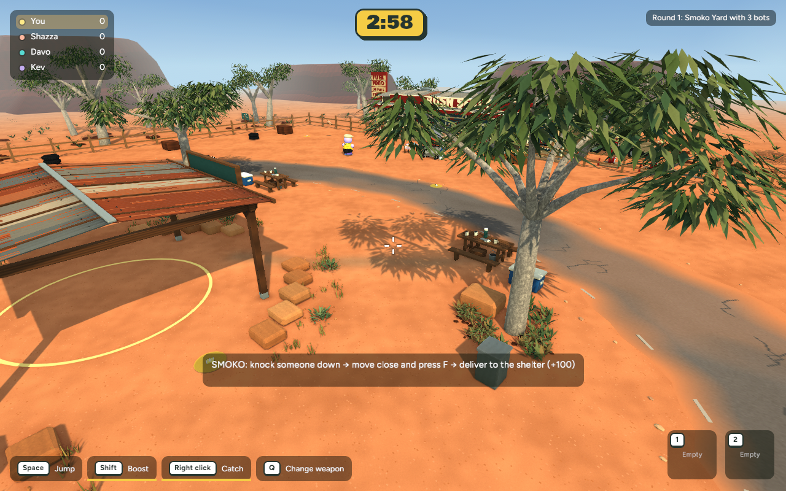
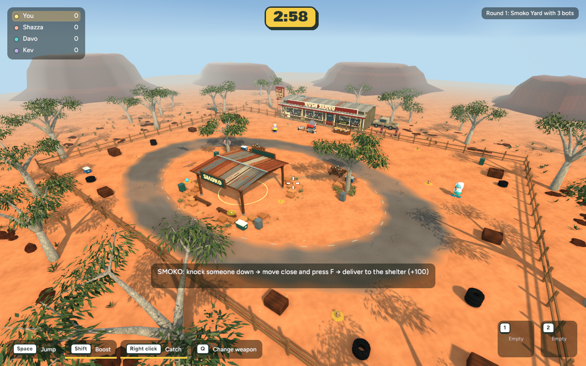
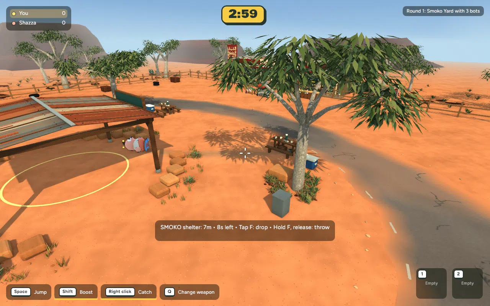
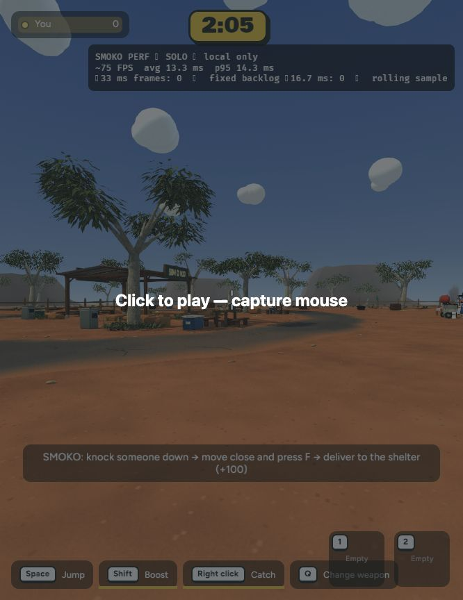
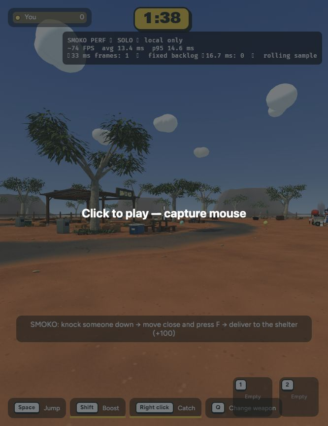

Actual implemented game captures · 31 October 2026 · Local review only
A restrained local lighting/material pass. Warm bounce opens shade, soft contact patches ground nearby props and characters, and timber/stone/dirt tones are more consistent. Outside scenery, gameplay and the global lighting rig remain unchanged. This is not yet the concept art’s final level of finish.



75 captured frames; camera drift and Smoko delivery fixture. +100 awarded, no remaining carried victim.
| View | Mean before → after | p95 before → after |
|---|---|---|
| Picnic | 8.009 → 8.127 ms | 12.254 → 10.199 ms |
| Overview | 7.917 → 7.791 ms | 12.537 → 9.285 ms |
600 wall-clock intervals per view, 1280×800, uncapped native rendering. Within timing variation; no meaningful regression in these samples.
Same stationary Smoko spawn/camera, zero bots, Balanced quality, 666×864 in-app browser. Two rolling samples: before mean 13.4 / 13.3 ms, p95 14.6 / 14.3 ms; after mean 13.4 / 13.4 ms, p95 14.6 / 14.6 ms. Roughly 74–75 FPS throughout; no meaningful regression observed.
The embedded browser blocked pointer capture. Simulation/rendering ran behind its capture prompt, so this measures stationary rendering only, not movement or multiplayer. Native captures above provide the unobscured visual comparison.


246 app tests passed, one existing test ignored. Native release/browser builds passed. Backyard smoke and Smoko delivery passed. Three shadowless lights, one shared 129-vertex contact mesh, two shared materials, no new textures. Runtime GLBs add 552,800 bytes of local vertex-colour data/metadata. Original geometry and image payloads remain intact.
Canopy shade has gentler contrast; its physical shadow-edge filter is unchanged. Contact shading is a lightweight ground-level approximation and hides when characters leave the ground. No changes have been published or committed.
Checkpoint and rollback instructions
cd /Users/marcus/Claude/australian-bbq/rust ~/.cargo/bin/cargo run -p bbq_app --release -- --menu
Choose Solo game → Bush Servo → Play Smoko.